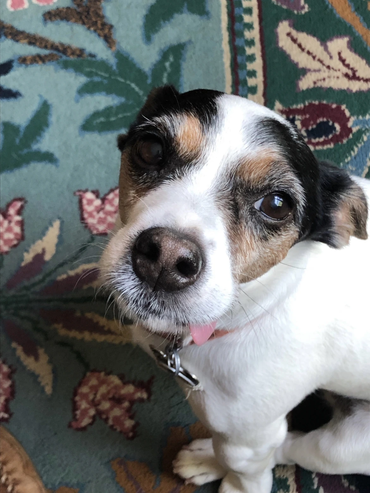
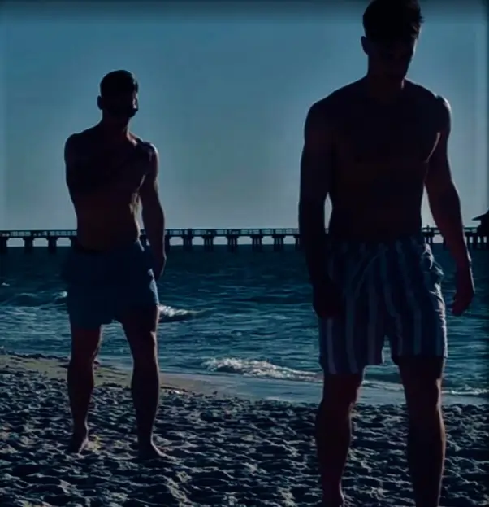

Most importantly, I’m excited at the opportunity to utilize high powered computational tools to benefit the environment
in any way possible. Frequently this employs geographic information systems to analyze satellite and aerial imagery and inform policy decisions.
In my career, I aim to combine UAV photogrammetry with machine learning models to automate environmental assessement
and protection protocols. I hope to apply these methods in the growing fields of precision turfgrass management and precision forestry.
Take a look below at some of my recent work experience below.
work experience
Virginia Tech SPES • May 2022 -
Currently I'm employed as an undergraduate research assistant in the Virginia Tech Turfgrass Pathology Lab,
exploring novel opportunities for applying modern technologies to traditional turfgrass practices. I’ve been
exposed to research into nematode sampling, surface uniformity testing, and other methods aimed at improving player experience
on golf courses and athletic facilities alike. Currently my coworkers and I are conducting post-emerge herbicide trials,
investigating the viability of blue gramma as a low-maintenance choice for lawns in the transition zone. A research poster
for some of this work is available here.
SKTWorks LLC • Sept 2021 -
Over the past year I've also been very fortunate to intern as a fieldwork assistant at a family-owned land conservation firm.
For the role I’ve been able to travel extensively throughout the state of Virginia, conducting site visits to assess land protection
practices in the establishment of conservation easements. Much of this experience has involved capture of aerial imagery with UAVs,
collection of detailed photopoint information in ArcGIS Field Maps, and contribution to baseline documentation reports.
haloes! haleskarth! I'm an FAA-licensed remote pilot pursuing a degree in environmental data science, slowly learning the basics of web design.
When i'm not pretending to be busy in front of a computer or flying a drone, I enjoy cooking and playing soccer. Dogs are my favorite animal,
and pineapple belongs on pizza.


acknowledgements
This page was written with Three.js, HTML and CSS. Many thanks to the Sketchfab creators
of the human,
drone, and
tree 3D models.
This site was the product of YouTube tutorials and lunch breaks. Coffee helped too.